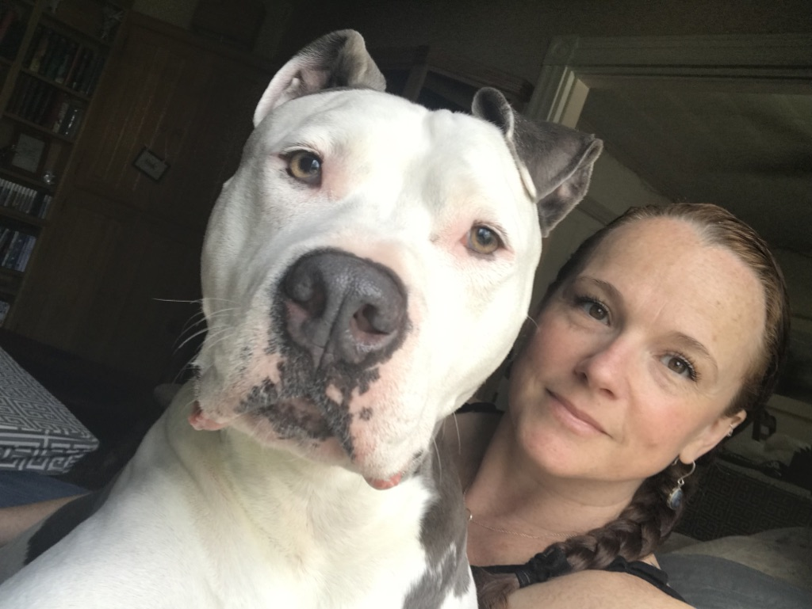
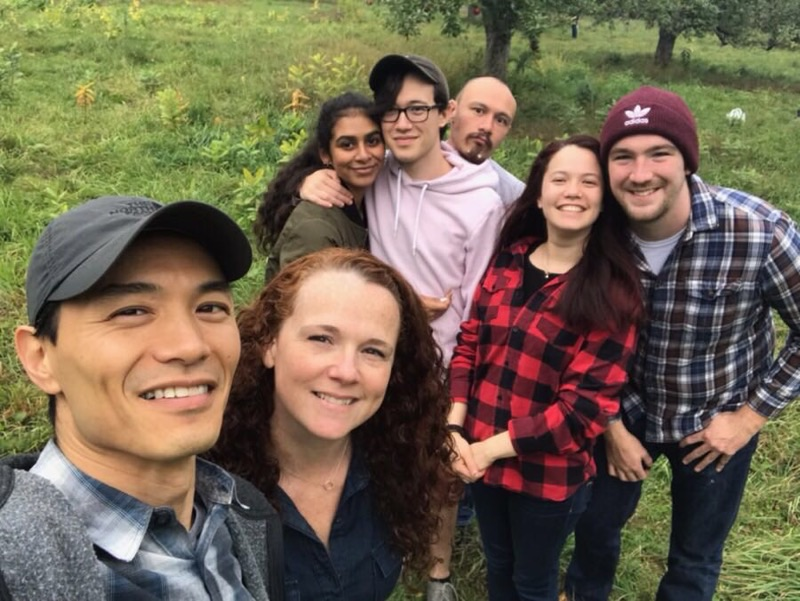
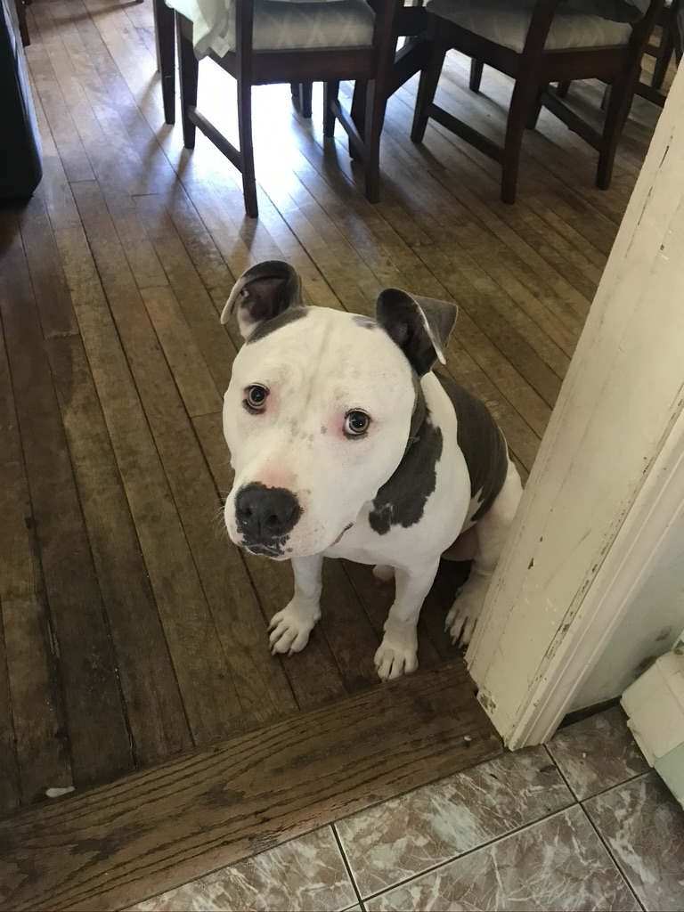

Outdoor Sports
Rock Climbing
Rock climbing has been a passion of mine for a long time. I have climbed cliffs all over the country at such places as Yosemite in California, Devil's tower in Wyoming, Gunk's in New York, and Canon Cliff in New Hampshire to name a few. I love climbing for it's multi-faceted nature. One of the element that I enjoy is risk m anagement. The bigger the climb and more difficult the rating, more you have to manage to stay safe and alive.Surfing
There is nothing like riding down the line of a wave carving up and down the face. I am an east coast surfer and proud of it. Though the waves are not as impressive as the west coast, there are some good ones to be had here. There is nothing like surfing during the fall in New England, when the beaches are quiet, skies are grey, and the foliage is at it's best. Surfing teaches you patience, and to never underestimate the mother nature.Mountain Biking
I love the New England. Sure there's mud, mosquitos, humidity, wet snow, and the bitter cold. But that makes us appreciate the really great days. As for mountain biking, it makes the terrains more interesting. I happen to have the only non-profit owned plot of land made for mountain biking near lovingly called Vietnam. It's one of the best Mountain Biking New England has to offer. I love mountain biking for the opportunity to get into a prolonged flow state.Hiking
By far the most epic hike was the Presidential range in the White Mountains. I did it with my buddy Matt in 14 hours. At 23 miles and 9k feet in total elevation gain, it was by far the hardest hike I have done.Stock Market / Business / World and Domestic Social Trends
Stock Market
There has never been more exciting time to be in the stock market. Learning the psycology, sociology, micro and macro economics behind what makes the market move is facinating to me..Business
I appreciate good business and love building and operating it. It is rare to see a business that is run seemlessly. But when I do, I imagine all the components that goes into it. But the bottom line is, there has to be a good leader and people who care.World and Domestic Social Trends
No matter how incredible the technology has come, or how amazing some businesses are, it means nothing without the people. No matter what, it has to be about the people. People and their culture, new or old facinates me to no end.Family, Friends, and Velvet Hippo
My family and friends are the most important thing to me. They make me a better person and my life richer. I owe so much to every one of them.

Iggy and my wife, Melanie.

Family and friends

Iggy, the Velvet Hippo